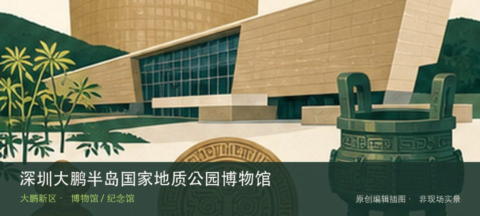

适合谁
适合亲子、地质爱好者和无法进入山线的游客；博物馆开放不代表科考线恢复。

SHENZHEN GUIDE · 299
南澳新大 · 博物馆 / 纪念馆
深圳大鹏半岛国家地质公园博物馆位于南澳新大地质公园景区，以古火山、海岸地貌、岩石矿物和生命演化为主线，是科考线封闭期间仍可独立成立的科学参观目的地。与同类地点相比，最值得停下来的差异落在古火山地质模型和大鹏半岛岩石标本这两个具体节点上。理解这处场馆，重点不是把所有展柜看完，而是沿着古火山地质模型和大鹏半岛岩石标本两条线索辨认其专题边界。常设展、开放楼层和时段可能调整，专程前往前仍应核对场馆当天公告。
WHY GO
适合亲子、地质爱好者和无法进入山线的游客；博物馆开放不代表科考线恢复。
先看地质时间线与岩石标本，再到博物馆景区公开户外节点；任何封闭科考线仍不进入。
公共交通先到南澳新大地质公园景区片区，再以深圳大鹏半岛国家地质公园博物馆公开参观入口为终点；校园、园区或预约型场馆须同时核对门禁与开放日。
自驾导航至博物馆景区正规停车区，先查开放与节假日管制；满位时按接驳安排，不驶入七娘山封闭道路。
全年可安排，尤其适合高温或降雨日；台风、极端天气及布展期仍可能临时调整开放。
NEARBY IDEAS